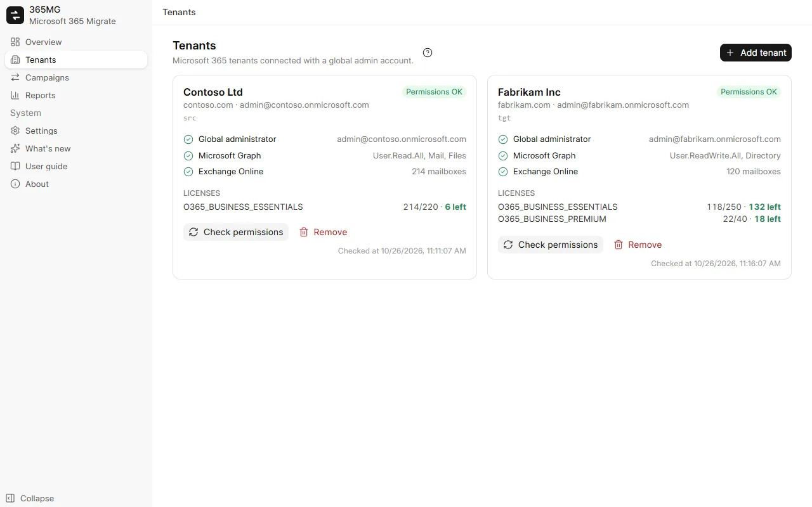
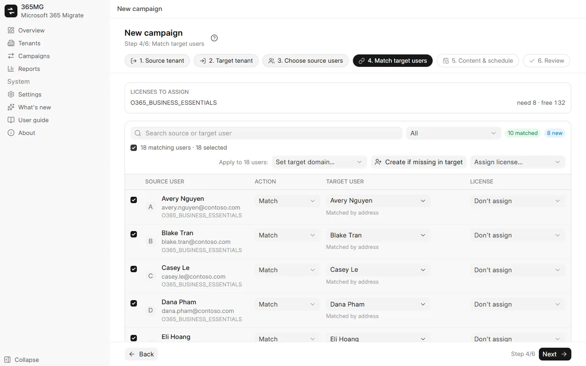
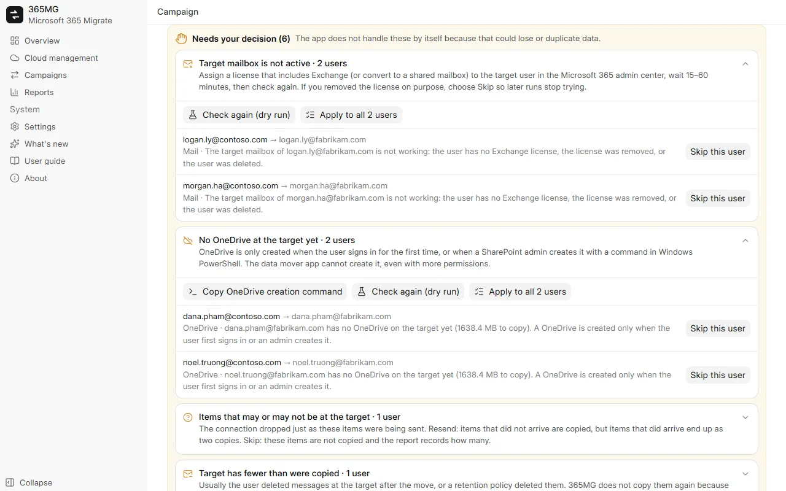

User guide
From installing 365MG to the last report. Each part has screenshots; the guided tours replay the main tasks with an animated cursor.
1. Install
365MG runs on Windows 10 or 11 (64-bit) with Microsoft Edge WebView2, which Windows already includes. The installer is provided by the author: write to the address below.
- Run
365MG_x.y.z_x64-setup.exeand follow the installer. - Open 365MG from the Start menu. Data stays on this PC in
%APPDATA%\com.tuanhd.365mg. - In Settings, choose the interface language and a temporary folder on a secondary drive.
2. Before you start
- A global administrator account in both the source and the target tenant.
- Enough licenses with Exchange Online (and OneDrive) in the target for the users you create or map.
- A PC that can stay on during the copy, with a fast, stable connection: data flows through it.
- A secondary drive for the temporary folder; only OneDrive files of 4 MB or more pass through it.
3. Add clouds
- Open Cloud management, click Add cloud and choose Microsoft 365.
- Sign in as global admin in the browser window that opens and accept the permissions.
- Back in 365MG, the cloud appears as a card with a Microsoft 365 tag and a health badge. Click it for its domains, permission checks and licenses; use Check permissions after changing anything in the admin center.

4. Google Workspace
Google Workspace works as a source and as a target, for mail, contacts, calendars, Google Drive, shared drives and groups. Connecting it takes three steps, once per Workspace.
- OAuth client (once for the app): in Google Cloud Console → APIs & Services → Credentials, create an OAuth client ID of type Desktop app and enter its Client ID and secret in 365MG Settings → Google Workspace OAuth client. Settings has the steps and a button to the right page.
- Sign in: in Cloud management, click Add cloud → Google Workspace and sign in as a super admin.
- Data mover: open the new card and click Set up data mover. 365MG creates a Google Cloud project, turns on the APIs it needs and creates a service account with a key kept encrypted on this PC.
- Domain-wide delegation: copy the Client ID and the scope list shown, open Admin console → Security → Access and data control → API controls → Domain-wide delegation, click Add new, paste both and authorize. Back in 365MG, click I've added it — check.
| Content | Microsoft → Google | Google → Microsoft |
|---|---|---|
| Each folder becomes a label; read state and flags kept | Each message goes to one folder (its first label, or Inbox/Sent/Archive); other labels become categories | |
| Contacts | Contact folders become contact groups | Contact groups become contact folders |
| Calendar | Events imported with attendees, no invitation sent | Events created without attendees (Microsoft would send invitations); the attendee list is kept in the event body |
| Drive | OneDrive files to My Drive as they are | Docs, Sheets, Slides exported to Word, Excel, PowerPoint; Forms and Sites skipped |
| Shared drives | SharePoint/Teams libraries → shared drives with members | Shared drives → private Microsoft 365 groups (team sites) with members |
| Groups | Microsoft 365 groups and lists → Google Groups with matching settings | Google Groups → Microsoft 365 groups |
Shared drives: tick Shared drives / SharePoint libraries in the campaign options, then in the campaign's Shared drives tab pick the source drives and click Create in target: 365MG creates the target shared drive or Microsoft 365 group and adds the members it can match.
5. Create a campaign
A campaign moves a set of users from one source tenant to one target tenant. The wizard has six steps; its title, steps and filters stay in view, and Back / Next / Save campaign stay at the bottom.
- Source cloud and Target cloud: one step each.
- Choose source users: filter by license, domain or state, tick users on the list and add them to the selection.
- Match target users: 365MG suggests a target user by address, alias or display name. Tick rows, then use Set target domain…, Create if missing in target or Assign license… in bulk; the checkbox above the list (N matching users) ticks every row the filter shows.
- Content & schedule: mail, OneDrive, contacts, calendar; skip Junk Email; run once or every N hours; thread counts.
- Review: check the summary and the licenses needed, then Save campaign.

6. Prepare the target users
On the campaign page, Create users & assign licenses creates the target users marked "Create" and gives every user the chosen license. Rows that fail show why; fix it and run it again.
New users get a random initial password they must change at first sign-in. Export them from the ⋯ menu as CSV, hand them over, then delete the file.
7. Waves and dry runs
In the Users tab, tick users and use Move to wave to split a large migration. The run bar can then start one wave at a time; scheduled runs keep syncing every wave already opened.
Dry run (count only) reads both sides and reports how many items, files and megabytes a real run would copy. It writes nothing to the target and also checks that every target mailbox and OneDrive exists.
8. Run, pause, resume
The run bar at the top of every campaign tab shows what the campaign is doing and what comes next.
| State | Shown | Buttons |
|---|---|---|
| Never run | The schedule | Start now, Dry run |
| Copying | Elapsed time, threads running and waiting | Pause |
| Paused | Last run | Resume (copies the rest) |
| Synced | When it finished and the next scheduled run | Run again (fetch new data), Pause schedule |
Pausing stops the threads and holds the schedule. Everything copied stays in the journals, so resuming never copies twice. The Copy progress tab shows each mailbox and OneDrive with its speed; a thread that stops moving is restarted automatically.
9. Needs your decision
When a run meets something it should not settle alone, the campaign shows a Needs your decision panel grouped by kind, with an explanation and the actions for each user.
| Kind | What to do |
|---|---|
| Target mailbox not working | License the user (or make it a shared mailbox), wait 15–60 minutes, Check again. If the license was removed on purpose, Skip this user. |
| No OneDrive in the target | Copy OneDrive creation command, run it in Windows PowerShell as SharePoint admin, or have the user sign in once; then check again. |
| Target user was recreated | Copy again from scratch into the new mailbox or OneDrive, or skip. |
| Items with unknown outcome | Resend (an item already there becomes two) or Skip these items. |
| Target has fewer than copied | Usually deleted on purpose in the target; acknowledge with Got it. |

10. Mail groups
In the Mail groups tab, pick source groups and click Create groups & add members. Graph can only create Microsoft 365 groups, so distribution lists and mail-enabled security groups become Microsoft 365 groups with the same alias, delivering to members' inboxes and accepting outside senders. Members without a target user are listed per group.
11. Take over a PowerShell pipeline
If you started a copy with PowerShell scripts, 365MG can take it over without copying again. On Campaigns, the PowerShell pipeline card has Import into 365MG: pick the pipeline's output folder and the users, the mail journals (imported, verified, rejected items) and the OneDrive journals (folders, files with their cTag) become a normal campaign.
- Stop the PowerShell jobs (the hourly mail sync and the OneDrive runners) so no new lines are written.
- Click Import into 365MG and choose the pipeline folder. Both tenants must already be connected under Clouds.
- Open the new campaign and click Import again to pick up whatever the pipeline wrote since, then click Start.
SharePoint libraries are imported as figures only (files and size per library), so they show up in the report but are not copied further by 365MG.
12. Reports
Reports shows, per campaign, source and copied counts per user and in total, users that need a look, groups and notes. Export HTML writes a single page (light and dark, search and filter) and opens it; CSV exports list users or groups.
Measure source and target (campaign page and Reports) reads mail count and size, file count and drive size on both sides and shows them under each user's source and target address; Quick measure skips the file count. The ⋯ menu at the end of a user row opens the checks for the source or target account, copies names and addresses, and opens that user in Reports. A PowerShell pipeline can also be chosen as the source of a report.
13. Monitor
Monitor (left menu) is the live view, refreshed every second: load of this computer (CPU, RAM, disk, network, temperature where readable), a chart of threads and speed (MB/s, files/s), the transfer log and progress with an ETA for every job. A second tab, Configuration, holds the cloud connections, the transfer pool and starting campaigns.
- Transfer pool: the files of a OneDrive, Google Drive or shared drive job are copied in parallel. The number of threads is shared by the whole app and can be changed while running.
- Resource limits: choose how many CPU cores to use and the priority (normal, below normal, lowest) so copying does not make the computer lag.
- Several mover apps: each target tenant can use up to four "365MG Data Mover" apps and jobs are spread between them, because SharePoint limits speed per app. A new app is used after about 10 minutes, once its permissions have taken effect.
- Order and retry: the largest job runs first; after the others finish, a job with errors is retried once.
- PowerShell pipeline: choose the folder of a pipeline copy and Monitor reads its state and logs to show overall progress.
14. Utilities: check by email
Utilities → Check by email answers "where is this mailbox, how big is it, and did the migration get all of it?" for one address.
- Type the address (primary address or alias) and click Check. Tick Count files to also count drive files; it lists the whole drive and can take minutes.
- Each cloud that has the address shows a card: mail items and size, OneDrive or Google Drive size (and quota), SharePoint group sites the user belongs to (Microsoft) or Google Photos storage (Google).
- For every campaign with the address, source and target are measured now and set side by side with what the journal copied and the difference, followed by open decisions and the history of runs (each pass: when, content, result, items, data, duration).
15. Data folder and backup
365MG keeps its database and backups in one data folder, by default D:\365MG (folders db and backups), not on drive C. Settings → Data & backup shows where it is and can move it; if the target folder already holds 365MG data, the app uses that.
Encrypted backup moves everything to another computer without signing in to the tenants again. The .365mgbak file holds the cloud sign-ins, the data mover certificates, Google client secrets and created users' passwords. Secrets are taken out of the protection tied to this computer and the whole file is encrypted with a passphrase of at least 8 characters (Argon2id and XChaCha20-Poly1305).
- Choose Full (with campaigns and journals) or Configuration and credentials only, type the passphrase twice and click Export backup.
- On the other computer open Settings → Data & backup, pick the file, type the passphrase and click Restore.
- The app restarts; the tenants are connected already. The previous data is kept as
365mg.before-restore-….db.
16. Settings and languages
- Language: nine languages, applied at once; Arabic switches the layout to right to left.
- Appearance: light, dark or matching Windows; the sun/moon button in the title bar switches too.
- Temporary folder: keep it off drive C.
- Treat a thread as stuck after: minutes without progress before a thread is restarted (at most twice).
- Data & backup: where the data lives, moving it, and encrypted backup and restore (see the section above).
- Google OAuth: add, edit and delete several OAuth clients, each with its own name; when you connect a Google Workspace with more than one client the app asks which to use.
17. Updates
What's new lists the changes of every version. When a newer version is published the sidebar shows it; Update to x.y.z downloads it, checks the author's signature, closes the app, installs and reopens it. Pause running campaigns first; resume them afterwards.
18. Troubleshooting
| Symptom | Cause and fix |
|---|---|
| "Waiting for the data mover app's permissions" | A new app takes a few minutes to be accepted by Exchange and SharePoint; the run waits up to 30 minutes by itself. |
| Speed drops, many "throttled" messages | Exchange or SharePoint limits per mailbox and per app. More threads do not help one mailbox; they help when many mailboxes are waiting. |
| Target counts lower than source | Check the report notes: skipped Junk Email, items left out by decision, or mail deleted in the target. |
| A mailbox already has mail in the target | 365MG refuses to copy into it on the first run. Allow it in the campaign only if no other tool copied into it. |